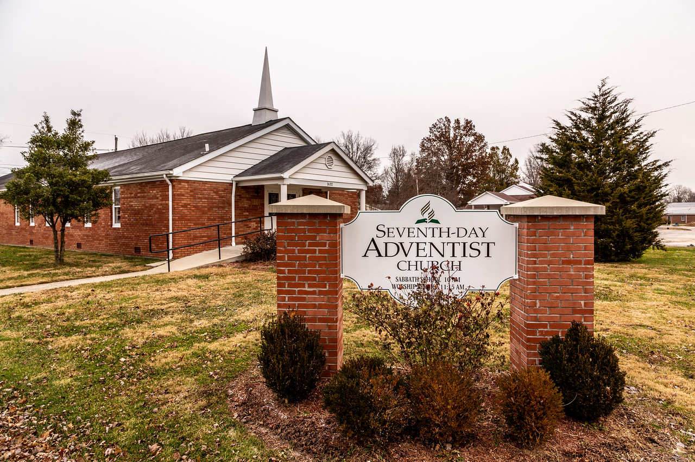

Welcome to Growing in Christ! We are delighted to welcome you to our church family. Growing in Christ is a place where faith grows, love is shared, and lives are transformed through Jesus Christ. Our mission is to worship God, study His Word, serve others, and share the everlasting hope of salvation. Whether you are visiting us for the first time or looking for a spiritual home, you are welcome here. **Let us grow together in faith, hope, and love!**

Growing in Christ Seventh-day Adventist Church is a community of believers united by faith in Jesus Christ. Our church is dedicated to worshiping God, studying the Bible, and sharing the message of hope and salvation. We encourage spiritual growth, love, fellowship, and service to others. Our desire is to help everyone develop a closer relationship with God as we prepare for the soon return of Jesus Christ.